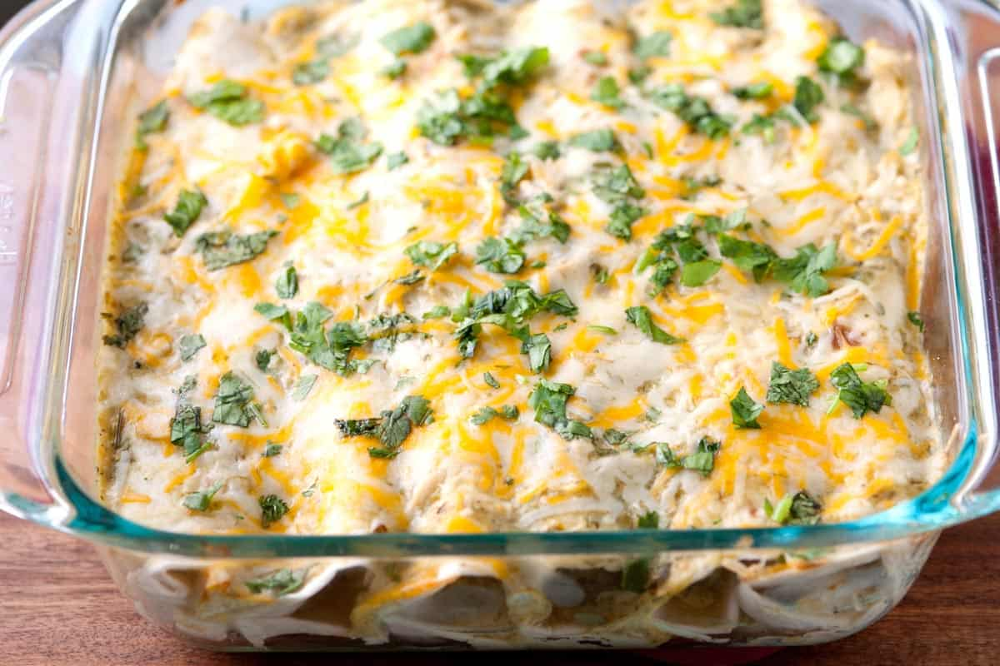

Are you ready to try the best enchiladas of your life?
DescriptionGreen Chile Chicken Enchilada casserole is comfort food. This recipe is based on the method I inherited from my grandmother, the best cook I’ve ever known and a green chile connoisseur. It isn’t fancy food. She raised four kids on a teacher’s salary.
People in the southwest have been growing chiles (Capsicum annuum) for at least four centuries. Prior to the arrival of the Spanish, pueblo indians grew chile with seed procurred from Mexican tribes via trade. Each pueblo continues to cultivate their own peppers. Each has a distinct pungency, sweetness, taste, and heat. For example, the Zia Pueblo pepper has a bitter-sweet flavor when it matures. Chimayo’s red chile is legendary, though smaller than other red chile varieties.